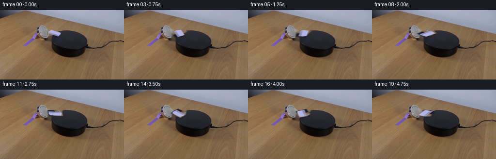
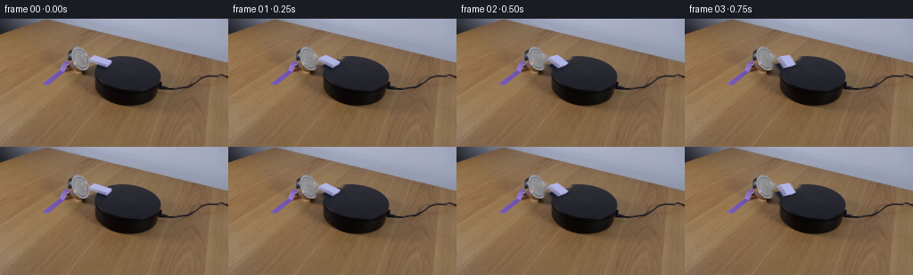

CODING AGENTS AS PIXEL WORLD MODELS
traex/GPT-5.6-Sol · 0096
点击播放 · 原生 RGB 像素
逐轮保存的候选
回放视频、检查图与代码变化。
每份候选均可单独播放。实际图片检查记录在下方工具轨迹中。
候选 01播放与检查图
点击播放 · 原生 RGB 像素


展开代码变化
--- 上一保存版本
+++ 本次保存版本
@@ -0,0 +1,109 @@
+"""Generate the requested locked-camera scientific demonstration.
+
+The source frame already contains the complete set. The only animated item is
+isolated from that frame, the small pale domino on the black platform. Motion
+is done in the platform plane (including its perspective foreshortening), so
+it remains in contact with the platform rather than looking like a flat image
+spinning in the camera plane.
+"""
+from pathlib import Path
+import math
+
+import cv2
+import numpy as np
+from PIL import Image
+
+import artifact_io
+
+
+HERE = Path(__file__).resolve().parent
+
+
+def soft_polygon(h, w, points, feather=0.72):
+ """Antialiased polygon mask made at 4x resolution."""
+ scale = 4
+ m = np.zeros((h * scale, w * scale), np.uint8)
+ p = np.rint(np.asarray(points) * scale).astype(np.int32)
+ cv2.fillConvexPoly(m, p, 255, lineType=cv2.LINE_AA)
+ if feather:
+ m = cv2.GaussianBlur(m, (0, 0), feather * scale)
+ return cv2.resize(m, (w, h), interpolation=cv2.INTER_AREA).astype(np.float32) / 255.0
+
+
+def affine_about(cx, cy, clockwise_radians, plane_y_scale):
+ """Image affine for a rotation in the foreshortened platform plane."""
+ c, s = math.cos(clockwise_radians), math.sin(clockwise_radians)
+ # S R S^-1 where S compresses the platform's receding image direction.
+ a = c
+ b = -s / plane_y_scale
+ d = plane_y_scale * s
+ e = c
+ tx = cx - a * cx - b * cy
+ ty = cy - d * cx - e * cy
+ return np.array([[a, b, tx], [d, e, ty]], np.float32)
+
+
+def generate():
+ original = np.asarray(Image.open(HERE / "first_frame.png").convert("RGB"), dtype=np.uint8)
+ h, w = original.shape[:2]
+
+ # The domino is the cool-white, shallow quadrilateral centred near (112,48).
+ # Its mask includes the dim bevels as well as its bright upper face.
+ silhouette = soft_polygon(
+ h, w,
+ [(103.2, 39.8), (128.1, 46.5), (125.0, 51.2),
+ (119.5, 56.9), (98.0, 52.1), (96.8, 47.0)],
+ feather=0.62,
+ )
+
+ # Remove both the body and its tiny contact shadow once. Telea inpainting
+ # reconstructs the platform's oblique rear edge from the pixels on either
+ # side; a small radius avoids washing out the platform texture.
+ remove = (silhouette > 0.025).astype(np.uint8) * 255
+ remove = cv2.dilate(remove, np.ones((5, 5), np.uint8), iterations=1)
+ # OpenCV expects BGR, although inpainting each RGB channel is equivalent.
+ clean = cv2.inpaint(original, remove, 3.0, cv2.INPAINT_TELEA)
+
+ # Premultiplied source prevents dark/color fringes during affine warps.
+ alpha = silhouette.astype(np.float32)
+ premul = original.astype(np.float32) * alpha[..., None]
+
+ frames = np.empty((20, h, w, 3), dtype=np.uint8)
+ frames[0] = original # generation contract: exactly pixel-identical
+
+ cx, cy = 112.2, 48.2
+ sy = 0.47 # measured foreshortening of the black platform's top plane
+
+ for i in range(1, 20):
+ t = i / 4.0
+ # The magnet starts the rotation gently and it then approaches a steady
+ # angular rate. The total visible turn is about 270 degrees.
+ angle_deg = 58.0 * t - 7.5 * (1.0 - math.exp(-1.35 * t))
+ M = affine_about(cx, cy, math.radians(angle_deg), sy)
+
+ wa = cv2.warpAffine(alpha, M, (w, h), flags=cv2.INTER_CUBIC,
+ borderMode=cv2.BORDER_CONSTANT, borderValue=0)
+ wp = cv2.warpAffine(premul, M, (w, h), flags=cv2.INTER_CUBIC,
+ borderMode=cv2.BORDER_CONSTANT, borderValue=0)
+ wa = np.clip(wa, 0.0, 1.0)
+ wp = np.clip(wp, 0.0, 255.0 * wa[..., None])
+
+ # Soft, close contact shadow. Its small down-camera displacement is
+ # fixed by the lighting while its footprint turns with the domino.
+ shadow_M = M.copy()
+ shadow_M[0, 2] += 0.7
+ shadow_M[1, 2] += 1.7
+ sh = cv2.warpAffine(alpha, shadow_M, (w, h), flags=cv2.INTER_LINEAR,
+ borderMode=cv2.BORDER_CONSTANT, borderValue=0)
+ sh = cv2.GaussianBlur(sh, (0, 0), 1.05)
+ sh = np.clip(sh * 0.19, 0, 0.16)
+
+ base = clean.astype(np.float32) * (1.0 - sh[..., None])
+ out = base * (1.0 - wa[..., None]) + wp
+ frames[i] = np.clip(np.rint(out), 0, 255).astype(np.uint8)
+
+ return frames
+
+
+if __name__ == "__main__":
+ artifact_io.save(generate(), HERE)
可观测工具轨迹
实际执行的命令与返回图片。
命令 1exit 0
/bin/bash -lc "cat GENERATION_RULES.md && printf '\\n---PROMPT---\\n' && cat prompt.txt"
命令 2exit 0
/bin/bash -lc "find . -maxdepth 2 -type f -printf '%p %s bytes\\n' | sort"
命令 3exit 0
/bin/bash -lc "python - <<'PY'
from PIL import Image
import numpy as np
im=np.array(Image.open('first_frame.png').convert('RGB'))
print(im.shape, im.min(), im.max())
# percentiles channels and brightness
v=im.mean(2)
print('rgb mean',im.reshape(-1,3).mean(0), 'brightness percentiles',np.percentile(v,[0,1,5,10,25,50,75,90,95,99,100]))
# grid region stats 16x9 blocks
chars=' .:-=+*#%@'
for y in range(0,144,6):
s=''
for x in range(0,256,4):
q=v[y:y+6,x:x+4].mean()
s+=chars[min(9,int(q/256*10))]
print(s)
PY"命令 4exit 0
/bin/bash -lc "python - <<'PY'
import cv2, numpy as np
im=cv2.imread('first_frame.png'); rgb=im[:,:,::-1]; hsv=cv2.cvtColor(im,cv2.COLOR_BGR2HSV)
# bright low sat components thresholds
for desc,mask in [
('bright', cv2.inRange(hsv,(0,0,150),(179,90,255))),
('white',cv2.inRange(hsv,(0,0,120),(179,45,255))),
('dark',cv2.inRange(hsv,(0,0,0),(179,255,45))),
('red', ((hsv[:,:,0]<12)&(hsv[:,:,1]>80)&(hsv[:,:,2]>50)).astype('uint8')*255),
('blue', ((hsv[:,:,0]>90)&(hsv[:,:,0]<140)&(hsv[:,:,1]>50)&(hsv[:,:,2]>40)).astype('uint8')*255),
]:
n,lab,st,cent=cv2.connectedComponentsWithStats(mask)
out=[]
for i in range(1,n):
x,y,w,h,a=st[i];
if a>=5: out.append((a,(x,y,w,h),tuple(np.round(cent[i],1))))
print('\\n',desc, sorted(out,reverse=True)[:25])
# sample grid avg RGB at 16 px
print('\\n16px grid RGB:')
for y in range(0,144,16):
print('y',y, [tuple(np.round(rgb[y:y+16,x:x+16].mean((0,1))).astype(int)) for x in range(0,256,16)])
PY"命令 5exit 0
/bin/bash -lc "cat artifact_io.py && python - <<'PY'
import cv2,numpy as np
im=cv2.imread('first_frame.png')[:,:,::-1]
# downsample 2x2, classify avg based dominant colors/hsv
for y in range(24,106,2):
s=''
for x in range(32,210,2):
a=im[y:y+2,x:x+2].mean((0,1)); r,g,b=a; mx=max(a); mn=min(a); br=a.mean()
if br<28: c='K'
elif br<50 and mx-mn<22:c='k'
elif b>r*1.17 and b>g*1.1:c='B'
elif r>b*1.35 and r>g*1.12:c='R'
elif br>145 and mx-mn<35:c='W'
elif br>115 and mx-mn<30:c='w'
elif r>b*1.25 and r>g*1.1:c='t'
elif br<75:c='d'
else:c='.'
s+=c
print(f'{y:3}',s)
PY"命令 6exit 0
/bin/bash -lc "python - <<'PY'
import cv2,numpy as np
im=cv2.imread('first_frame.png'); g=cv2.cvtColor(im,cv2.COLOR_BGR2GRAY)
e=cv2.Canny(g,40,100)
ls=cv2.HoughLinesP(e,1,np.pi/180,threshold=8,minLineLength=5,maxLineGap=2)
A=[]
for l in ls[:,0]:
x1,y1,x2,y2=map(int,l); ln=((x2-x1)**2+(y2-y1)**2)**.5
if 25<y1<105 or 25<y2<105:A.append((round(ln,1),(x1,y1,x2,y2),round(np.degrees(np.arctan2(y2-y1,x2-x1)),1)))
for z in sorted(A,reverse=True)[:100]:print(z)
PY"命令 7exit 0
/bin/bash -lc "python - <<'PY'
from PIL import Image
import numpy as np
im=np.array(Image.open('first_frame.png'))
for y in range(28,83):
s=''
for x in range(70,145):
r,g,b=im[y,x]; br=(int(r)+int(g)+int(b))/3
if br<18:c='@'
elif br<35:c='#'
elif br<55:c='D'
elif b>r*1.3 and b>g*1.15:c='B'
elif b>r*1.15 and b>g*1.08:c='b'
elif br>175:c='O'
elif br>150 and max(r,g,b)-min(r,g,b)<45:c='W'
elif br>125 and max(r,g,b)-min(r,g,b)<45:c='w'
elif r>b*1.5 and r>g*1.17:c='R'
elif r>b*1.25 and r>g*1.08:c='r'
elif br<80:c='d'
elif br<110:c='.'
else:c='-'
s+=c
print(f'{y:3} {s}')
PY"命令 8exit 0
/bin/bash -lc "python - <<'PY'
from PIL import Image
import numpy as np
im=np.array(Image.open('first_frame.png'))
for y in range(37,59):
print('\\ny',y,end=' ')
for x in range(90,136):
r,g,b=map(int,im[y,x]); v=(r+g+b)//3
# value digit bins and blue marker
if b>r+22: c='B'
elif v<40:c='@'
elif v<70:c='#'
elif v<100:c='.'
elif v<125:c='-'
elif v<145:c='+'
elif v<165:c='w'
elif v<185:c='W'
else:c='O'
print(c,end='')
print()
# raw rows x95:130
for y in range(40,56):
print(y, ['%3d'%im[y,x].mean() for x in range(95,131)])
PY"命令 9exit 0
/bin/bash -lc "python - <<'PY'
from PIL import Image
import numpy as np
A=np.array(Image.open('first_frame.png'))
# inspect 2x2 based relative to local black platform: brightness bins; cool highlights C
for y in range(38,102,2):
s=''
for x in range(100,205,2):
q=A[y:y+2,x:x+2].mean((0,1)); r,g,b=q; v=q.mean()
if v<15:c='@'
elif v<30:c='#'
elif v<45:c='D'
elif v<60:c='d'
elif v<75:c='.'
elif v<95:c=':'
elif v<115:c='-'
elif v<135:c='+'
elif v<155:c='w'
elif v<175:c='W'
else:c='O'
if b-r>25 and v>55:c='B'
s+=c
print(f'{y:3} {s}')
# RGB patches of notable x170-185
print('\\ncoords')
for y in range(50,82,2):
print(y,[tuple(A[y,x]) for x in range(168,186,2)])
PY"命令 10exit 0
/bin/bash -lc "python - <<'PY'
from PIL import Image
import numpy as np
A=np.array(Image.open('first_frame.png')).astype(int)
for y in range(25,82):
s=''
for x in range(45,140):
q=A[y,x]; mx=q.max(); mn=q.min(); v=q.mean()
if v>185 and mx-mn<60:c='O'
elif v>165 and mx-mn<45:c='W'
elif v>145 and mx-mn<45:c='w'
elif v>125 and mx-mn<35:c='+'
elif v<40:c='#'
elif q[2]-q[0]>25:c='B'
elif v<65:c='d'
elif v<95:c='.'
elif v<120:c='-'
else:c=' '
s+=c
print(f'{y:3} {s}')
PY"命令 11exit 0
/bin/bash -lc "python - <<'PY'
from PIL import Image
import numpy as np, cv2
A=np.array(Image.open('first_frame.png')).astype(float)
for crit in range(3):
print('criterion',crit)
for y in range(36,61):
q=A[y]; v=q.mean(1); rb=q[:,0]-q[:,2]; ch=q.max(1)-q.min(1)
if crit==0:m=(v>80)&(rb<12)
elif crit==1:m=(v>110)&(rb<20)
else:m=((v>130)&(ch<55))|((q[:,2]-q[:,0]>10)&(v>70))
xs=np.where(m & (np.arange(256)>=90)&(np.arange(256)<140))[0]
print(y, (xs.min(),xs.max(),len(xs)) if len(xs) else '')
PY"命令 12exit 0
/bin/bash -lc "python - <<'PY'
from PIL import Image
import numpy as np
A=np.array(Image.open('first_frame.png'))
pts=[(105,42),(110,43),(115,45),(120,46),(100,47),(105,47),(110,47),(115,47),(120,48),(124,48),(103,50),(108,50),(113,50),(118,50),(121,52),(116,53)]
for x,y in pts:print((x,y),A[y,x],A[y,x].mean())
PY"命令 13exit 0
/bin/bash -lc "cat > generate.py <<'PY'
\"\"\"Generate the requested locked-camera scientific demonstration.
The source frame already contains the complete set. The only animated item is
isolated from that frame, the small pale domino on the black platform. Motion
is done in the platform plane (including its perspective foreshortening), so
it remains in contact with the platform rather than looking like a flat image
spinning in the camera plane.
\"\"\"
from pathlib import Path
import math
import cv2
import numpy as np
from PIL import Image
import artifact_io
HERE = Path(__file__).resolve().parent
def soft_polygon(h, w, points, feather=0.72):
\"\"\"Antialiased polygon mask made at 4x resolution.\"\"\"
scale = 4
m = np.zeros((h * scale, w * scale), np.uint8)
p = np.rint(np.asarray(points) * scale).astype(np.int32)
cv2.fillConvexPoly(m, p, 255, lineType=cv2.LINE_AA)
if feather:
m = cv2.GaussianBlur(m, (0, 0), feather * scale)
return cv2.resize(m, (w, h), interpolation=cv2.INTER_AREA).astype(np.float32) / 255.0
def affine_about(cx, cy, clockwise_radians, plane_y_scale):
\"\"\"Image affine for a rotation in the foreshortened platform plane.\"\"\"
c, s = math.cos(clockwise_radians), math.sin(clockwise_radians)
# S R S"'^-1 where S compresses the platform'"'s receding image direction.
a = c
b = -s / plane_y_scale
d = plane_y_scale * s
e = c
tx = cx - a * cx - b * cy
ty = cy - d * cx - e * cy
return np.array([[a, b, tx], [d, e, ty]], np.float32)
def generate():
original = np.asarray(Image.open(HERE / \"first_frame.png\").convert(\"RGB\"), dtype=np.uint8)
h, w = original.shape[:2]
# The domino is the cool-white, shallow quadrilateral centred near (112,48).
# Its mask includes the dim bevels as well as its bright upper face.
silhouette = soft_polygon(
h, w,
[(103.2, 39.8), (128.1, 46.5), (125.0, 51.2),
(119.5, 56.9), (98.0, 52.1), (96.8, 47.0)],
feather=0.62,
)
# Remove both the body and its tiny contact shadow once. Telea inpainting
# reconstructs the platform's oblique rear edge from the pixels on either
# side; a small radius avoids washing out the platform texture.
remove = (silhouette > 0.025).astype(np.uint8) * 255
remove = cv2.dilate(remove, np.ones((5, 5), np.uint8), iterations=1)
# OpenCV expects BGR, although inpainting each RGB channel is equivalent.
clean = cv2.inpaint(original, remove, 3.0, cv2.INPAINT_TELEA)
# Premultiplied source prevents dark/color fringes during affine warps.
alpha = silhouette.astype(np.float32)
premul = original.astype(np.float32) * alpha[..., None]
frames = np.empty((20, h, w, 3), dtype=np.uint8)
frames[0] = original # generation contract: exactly pixel-identical
cx, cy = 112.2, 48.2
sy = 0.47 # measured foreshortening of the black platform's top plane
for i in range(1, 20):
t = i / 4.0
# The magnet starts the rotation gently and it then approaches a steady
# angular rate. The total visible turn is about 270 degrees.
angle_deg = 58.0 * t - 7.5 * (1.0 - math.exp(-1.35 * t))
M = affine_about(cx, cy, math.radians(angle_deg), sy)
wa = cv2.warpAffine(alpha, M, (w, h), flags=cv2.INTER_CUBIC,
borderMode=cv2.BORDER_CONSTANT, borderValue=0)
wp = cv2.warpAffine(premul, M, (w, h), flags=cv2.INTER_CUBIC,
borderMode=cv2.BORDER_CONSTANT, borderValue=0)
wa = np.clip(wa, 0.0, 1.0)
wp = np.clip(wp, 0.0, 255.0 * wa[..., None])
# Soft, close contact shadow. Its small down-camera displacement is
# fixed by the lighting while its footprint turns with the domino.
shadow_M = M.copy()
shadow_M[0, 2] += 0.7
shadow_M[1, 2] += 1.7
sh = cv2.warpAffine(alpha, shadow_M, (w, h), flags=cv2.INTER_LINEAR,
borderMode=cv2.BORDER_CONSTANT, borderValue=0)
sh = cv2.GaussianBlur(sh, (0, 0), 1.05)
sh = np.clip(sh * 0.19, 0, 0.16)
base = clean.astype(np.float32) * (1.0 - sh[..., None])
out = base * (1.0 - wa[..., None]) + wp
frames[i] = np.clip(np.rint(out), 0, 255).astype(np.uint8)
return frames
if __name__ == \"__main__\":
artifact_io.save(generate(), HERE)
PY
python generate.py
python - <<'PY'
import numpy as np
from PIL import Image
from pathlib import Path
A=np.array(Image.open('first_frame.png').convert('RGB'))
z=np.load('pixels.npz')['pixels']
# unpack first frame
p=z[:,:,0]
B=np.stack([(p>>16)&255,(p>>8)&255,p&255],2).astype('uint8')
print('shape tensor',z.shape,'first exact',np.array_equal(A,B))
for i in [0,1,2,4,8,12,16,19]:
F=np.array(Image.open(f'frames/{i:02d}.png'))
D=np.any(F"'!=A,2)
ys,xs=np.where(D)
print(i,'"'changed',D.sum(),'bbox',None if not len(xs) else (xs.min(),ys.min(),xs.max(),ys.max()),'meanabs',np.abs(F.astype(int)-A).mean())
PY"保存候选 1 份；完成命令 13 次；可验证图片返回 0 张。原始 API 响应与完整日志保留在本地。